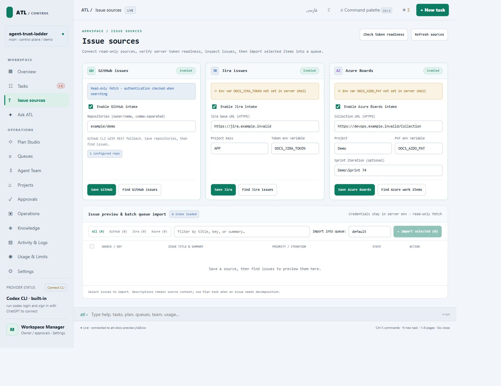

Issue sources
Configure a connector, preview issues, then import selected candidates into a queue. Imported text needs an executable objective and completion checks before it becomes trustworthy work.
Prerequisites
Open the managed project in the Control Plane. Have read access to the source and put credentials in the ATL server’s environment. The page stores token environment variable names, not their values. Use synthetic hosts and injected adapters for tests.
Configure the connector
Open Issue sources, enter its fields, and save.
| Source | Enter | Authentication |
|---|---|---|
| GitHub | Repository names such as example/demo |
Authenticated gh CLI or GITHUB_TOKEN; public repositories may allow anonymous reads |
| Jira | Base URL such as https://jira.example.invalid, project keys APP, OPS |
Token variable, default JIRA_TOKEN |
| Azure Boards | Organization/collection URL, project, optional iteration | PAT variable, default AZDO_PAT |
For https://devops.example.invalid:32678/Collection/Project/_workitems/recentlyupdated/, enter https://devops.example.invalid:32678/Collection as the organization URL and Project as the project. A sprint taskboard URL is a browser view, not the connector base. Enter the iteration separately, for example Project\Sprint 74.
Expected result: a settings-saved message. Saving does not import issues.
Preview and import
- Choose Preview for a configured source.
- Search or filter candidates.
- Select the intended issues and import them.
- Inspect the reported queue, then open Tasks and Queues.
- Check the imported source identity, revision, objective, and checks.

Preview creates no tasks. Import creates local candidates with source identity and revision metadata. Deduplication is source-aware; avoid editing identities by hand.
Plan description-only work
Open the imported request in Plan Studio. Record constraints and questions, generate a repository-grounded plan, inspect proposals, and request separate review. Resolve findings before approving a new queue. A local template is a preview, not a provider-reviewed plan.
A changed source revision invalidates approval evidence. Refresh and review against the current issue. See Plan Studio and its contract.
Recover connector errors
Check enablement, URL shape, selected repositories/projects, token availability in the server environment, and network access. Preserve the adapter error. Do not substitute a production issue for an offline fixture. Jira intake does not imply Jira writeback; plan publishing currently targets GitHub/Azure.
Source and checks
Implementation: runtime/lib/intake.mjs, composer.mjs, and source routes in control-plane-server.mjs. Run node verification/jira_adapter_contract_test.mjs, node verification/github_adapter_contract_test.mjs, node verification/azure_issue_journey_test.mjs, or node verification/issue_source_ui_journey_test.mjs from the clone.
The recorded mock E2E run demonstrates orchestration with fixture workers. It does not establish that real issues were fixed or remote PRs published.